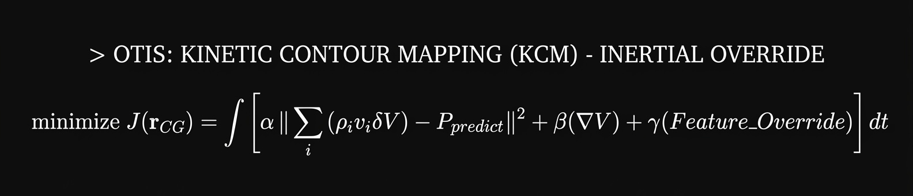

How Mythos weaponized FFmpeg against open-source drones.

The Threat: Bypassing the Optical Matrix
The modern defense drone is essentially a flying smartphone. And just like a smartphone, its software is bloated, general-purpose, and vulnerable.
Anthropic’s Mythos model just demonstrated that relying on an Ubuntu/ROS 2 stack means inheriting decades of unpatched zero-days. An adversary doesn't need to spoof your drone physically anymore; a single maliciously encoded video frame can trigger a buffer overflow in the FFmpeg library, granting Remote Code Execution (RCE) before the image is even processed by the targeting matrix.
"Applied kinematics and vulnerability data confirm this exploit isn't theoretical—it’s a timeline."
Colby Fitch | Lead Systems Architect
"Legacy C-UAS sees a patchable software stack. SkyGuard sees undeniable math."
The Solution: Mathematical Isolation
O.T.I.S. does not route targeting data through a general-purpose OS. We use a closed-loop Kinetic Contour Mapping (KCM) engine. Instead of vulnerable feature-matching algorithms that parse manipulatable pixels through FFmpeg, KCM isolates the target's inertial Center of Gravity directly at the hardware layer.
Conceptual Architecture (KCM): [Expand to read more]
> minimize J(r_{CG}) = ∫ [ α || Σ(ρ_i v_i δV) - P_{predict} ||² + β(∇V) + γ(Feature_Override) ] dt
To put it simply: the equation above tells our system to ignore what the drone looks like.
1. || Σ(ρ_i v_i δV) - P_{predict} ||² : Tracks actual physical mass and momentum.
2. β(∇V) : Penalizes rapid, unnatural volume changes.
3. γ(Feature_Override) : Discards the exploitable feature-matching matrix.
If the target rapidly changes shape (morphological spoofing) but its mass and trajectory remain constant, O.T.I.S. flags the visual data as an illusion and tracks the physics. Mathematical truth defeats morphological camouflage.
[APPENDIX] THE O.S. (OBSOLETE STACK) BREAKDOWN
The global defense robotics industry is currently built on a sprawling, interdependent open-source foundation. Anthropic’s Mythos model exposes the terminal flaw in relying on this shared architecture for kinetic defense:
- The Brain (Ubuntu/Linux): The standard OS for companion computers processing heavy drone AI. It inherits decades of general-purpose vulnerabilities.
- The Nervous System (ROS 2): The Robot Operating System. The industry-standard middleware that passes sensor data to navigation algorithms. If bypassed, the drone's logic is hijacked.
- The Eyes (FFmpeg/GStreamer): The open-source video codecs used to decode h.264 camera streams. A single maliciously encoded frame can trigger a buffer overflow here, granting Remote Code Execution (RCE) before the target is even processed.
- The Muscle (PX4/ArduPilot): The open-source flight controllers. Once the Ubuntu/ROS layer is compromised via the camera lens, adversaries send MAVLink commands to ground or hijack the asset.
Conclusion: You cannot secure a modular open systems approach against AI-generated zero-days. Survival requires the air-gapped mathematical isolation of O.T.I.S.